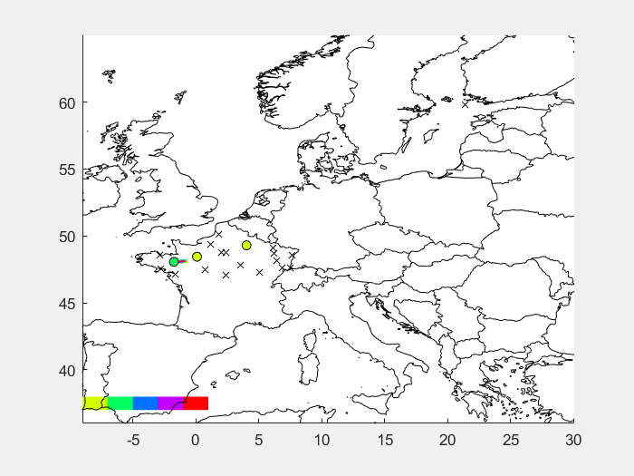

Interaction with other languages
One of the most significant advantages of Julia is its speed. As we discussed in the section Why julia?, Julia is fast out-of-box without the necessity to do any additional steps. As a result, Julia solves the so-called Two-Language problem:
Users are programming in a high-level language such as R and Python, but the performance-critical parts of the code have to be rewritten in C/Fortran for performance.
Since Julia is fast enough, most of the libraries are written in pure Julia, and there is no need to use C/Fortran for performance. However, there are many high-quality, mature libraries for numerical computing already written in C and Fortran. It would be a shame if it will not be possible to use them in Julia.
To allow easy use of this existing code, Julia makes it simple and efficient to call C and Fortran functions. Julia has a no boilerplate philosophy: functions can be called directly from Julia without any glue code generation or compilation – even from the interactive prompt. This is accomplished just by making an appropriate call with the ccall syntax, which looks like an ordinary function call. Moreover, it is possible to pass Julia functions to native C functions that accept function pointer arguments. This section will show one example of the interaction between Julia and C. Extensive description of all provided functionality can be found in the official manual.
The following example is taken from the official manual. Consider the situation that we want to use the qsort function from the standard C library. The qsort function sorts an array and is declared as follows.
void qsort(void *base, size_t nitems, size_t size,
int (*compare)(const void*, const void*))The base is the pointer to the first element of the array to be sorted. The nitems is the number of elements in the array pointed by base. The size is the size in bytes of each element in the array. Finally, the compare is the function that compares two elements. The compare function should return a negative integer if the first argument is less than the second, a positive integer if the first argument is greater than the second, and otherwise zero. Such a Julia function can be defined as follows.
mycompare(a, b)::Cint = sign(a - b)Since the qsort function expects that the return type of the compare function is C int, we annotate the return type to be Cint. In order to pass this function to C, we obtain its address using the macro @cfunction.
mycompare_c = @cfunction(mycompare, Cint, (Ref{Cdouble}, Ref{Cdouble}))The @cfunction macro requires three arguments: the Julia function, the return type, and the tuple of the input argument types. Finally, we can use the ccall function to call the qsort function.
julia> A = [1.3, -2.7, 4.4, 3.1];
julia> ccall(:qsort, Cvoid, (Ptr{Cdouble}, Csize_t, Csize_t, Ptr{Cvoid}),
A, length(A), sizeof(eltype(A)), mycompare_c)
julia> A
4-element Vector{Float64}:
-2.7
1.3
3.1
4.4Besides C and Fortran that can be called directly using ccall function, it is possible to interact with other languages using third-party packages. The following table shows an overview of those packages.
| Language | Calling from Julia | Calling Julia |
|---|---|---|
| C++ | Cxx.jl package | ??? |
| Python | PyCall.jl | PyJulia |
| R | RCall.jl | JuliaCall |
| Mathematica | MathLink.jl | ExternalEvaluate |
| MATLAB | MATLAB.jl | Mex.jl |
| Java | JavaCall.jl | JuliaCaller |
Moreover, other Julia packages provide Julia interface for some well-known libraries from other languages. As an example, we can mention ScikitLear.jl, which provides an interface for the scikit-learn library from Python or the RDatasets.jl that provides an easy way to load famous R datasets.
RCall.jl
The RCall.jl package provides an interface for calling R functions from Julia and passing data between these two languages. The package provides an interactive REPL for the R language that can be accessed from the Julia REPL by typing the $ symbol. Consequently, it is possible to easily switch between these languages and use functionality provided by both languages simultaneously.
julia> using RCall, RDatasets
julia> mtcars = dataset("datasets", "mtcars");
R> library(ggplot2)
R> ggplot($mtcars, aes(x = WT, y = MPG)) + geom_point()
The package also provides string syntax that allows non-interactive usage. The previous example can be rewritten as follows.
using RCall, RDatasets
mtcars = dataset("datasets", "mtcars");
R"""
library(ggplot2)
ggplot($mtcars, aes(x = WT, y = MPG)) + geom_point()
"""Note that we use multiline string syntax, but it is also possible to use standard string syntax. This multiline string syntax is very useful, especially when we want to perform multiple operations in R at once and then just return the result to Julia.
MATLAB.jl
The MATLAB.jl provides an easy interface for calling Matlab functions and passing data between Julia and Matlab. Consider the situation that you wrote a Matlab function that uses some special functionality that is not available in Julia. MATLAB.jl package provides an interface to call this function directly from Julia, as can be seen in the following example.
using MATLAB, BSON
X = BSON.load("data.bson")[:X]
mxcall(:MakeVideo, 0, X, "video.gif")The mxcall function accepts the name of the function as the first argument and the number of the output variables of that function as the second argument. All other inputs to the mxcall function are the input arguments of the Matlab function. The result is the following animation.

Like the RCall.jl package, the MATLAB.jl package also provides string syntax that allows for Matlab syntax. The previous example can be rewritten as follows.
using MATLAB, BSON
X = BSON.load("data.bson")[:X]
mat"""
MakeVideo($(X), 30, "Video2.gif");
"""